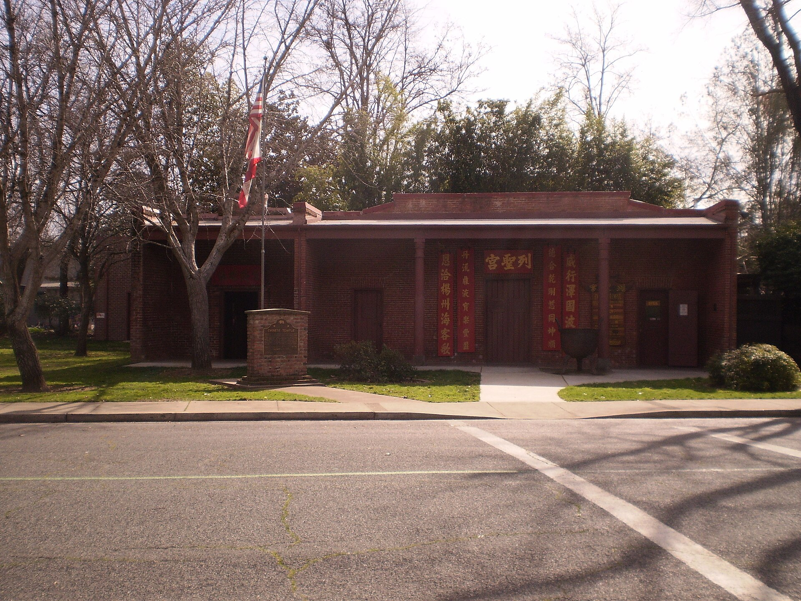
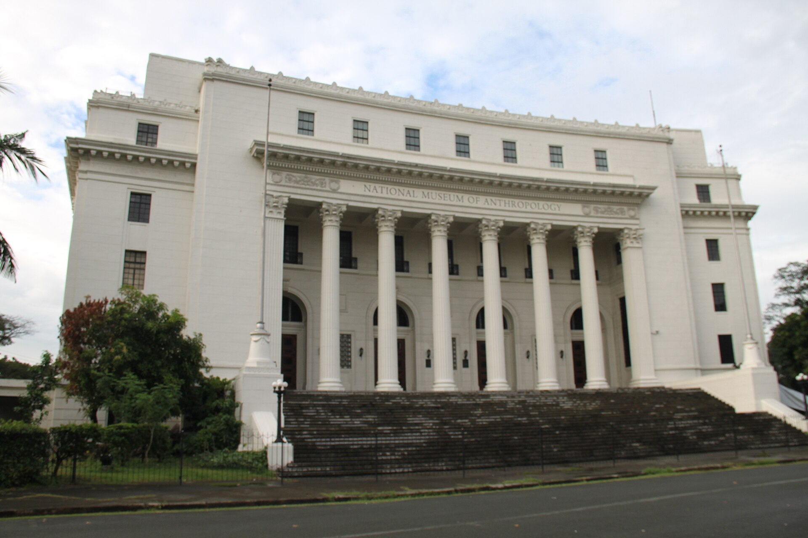

第 23 章
自己的展厅
从木头沟河谷的风与切割痕迹中走出，转向长安街边的文化广场。纵览长安街沿线，从一系列国家级文化机构向西望去，那座浅灰色花岗岩建筑的外墙格外引人注目。巨大的海报上，佛首被放大了数十倍，砂岩纹理清晰可辨，低垂的眼睑在正午阳光下投下一小片阴影。海报下方的“归来——流失文物回归展”字样下，参观者的队伍从检票口一直蜿蜒至广场旗杆附近，旗帜在风中往复舒卷。这并非一场普通展览，在博物馆内部术语中，它被定义为“回归展”，拥有独立的预算、专门的团队和一套区别于常规陈列的运作逻辑。筹备会上，一位策展人点明了核心：“我们要处理的不仅是文物，还有一件东西叫‘流失史’。”
另一位负责展陈设计的同事问：“流失史怎么展？”
这个问题引出了一场持续数周的争论。焦点集中在展览的第三单元——关于文物流失过程的部分。初稿方案中，这个单元被命名为“劫难”，展板上将详细说明每一件文物的流失经过：何时、何地、经由何人之手离开中国。方案中包括了一份清单，列出了参与文物流失的关键人物和机构。方案在内部审查时被搁置。搁置的理由不是技术性的，而是叙事性的。
一份内部文件这样表述：“过度呈现流失细节，可能会引发观众的民族情绪，这符合展览初衷，但过于具象化的流失叙事，也会带来一些你无法完全控制的后果。比如，有些流失行为在当时的法律框架下是合法的，有些涉及复杂的跨国交易链，有些外国机构在当时是依照协议获取文物的。如果逐一详述，你们怎么在展览文本中区分这些不同情况？如果所有流失都被笼统地归为盗抢，可能会在适当时机引发学术争议，损害展览的学术公信力。”
最终通过的方案是用一个更为抽象的标题“离散”替代“劫难”。展墙上不再详细说明每一件文物的流失经过，而是用概括性的文字描述“近代以来中国文物流失的历史背景”。那几件重点展品的来源信息被缩减为几个字的简短说明——“原藏龙门石窟”“出自敦煌藏经洞”——放在说明牌的最底部。一位参与初稿方案的研究员在会后保留了自己的笔记。笔记里写道：“我们把流失史变成了背景。这个背景越模糊，回归的叙事就越清晰。这是叙事策略的基本逻辑。但我一直在想，模糊掉的那些部分，它们去了哪里？”
二
展览现场提供了答案的一种形式。进入展厅后，观众首先看到的是一个巨大的投影屏幕，循环播放一部三分钟的短片。短片的开头是黑白历史影像：清末的码头，外国商船停泊在港口；接着是当代彩色画面：一架中国国际航空公司的货机降落在北京首都国际机场，机舱门打开，装载文物的木箱被小心卸下。配乐从低沉的弦乐渐变为明亮的管乐。画外音用男中音说：“它们离开的时候，这个国家正在沉沦。它们归来的时候，这个国家正在崛起。”
短片的结尾是卫星地图上的一条轨迹线，从一个欧洲城市飞向北京，线的末端变成一个光点，落在博物馆的位置上。这不是一个展出文物，而是展出“归来”本身。“归来”被建构为一具象的、可视的、可被情感识别的叙事。观众在进入展品之前，已经被这个短片完成为情绪位——他们是来迎国宝回家的。展柜中的物体在这个叙事框架中被重新义。一件西周的铜鼎，不再是祭器，而是“国力的象征”。一尊唐代的萨像，不再是礼的对象，而是“民族艺术的瑰宝”。整个展厅的色彩系统化了这种重新义：深红色的主题墙，金色的标题字，温的射灯——这些色彩不属于窟，不属于寺，而属于庆典和殿堂。## 三
但展览内部存在一个微妙的断裂。在主展厅的一侧，有一个较小的专题展区，名称叫“捐赠者纪念墙”。这里的色是白色和灰色，与主展的深红与金色形成对照。墙上陈列着捐赠者的照片和简短事跡——那些将流失文物买下并捐赠给国家的人人物。其中有些是海外侨商，有些是香港商务人，有些是中国内地的企业。
这个区域在展览中的位置值得注意。它既不在入处的序厅（那属于国叙事），也不在最深入的主展厅（那属于物本身），而是在一个过渡地带——一条走廊的侧。观众在从主展厅走向出口时经这里。一位展设计师后来在业期刊上写了一篇文章，讨论这个空间的安排。她没有直接批评方的决策，而是用了“约成”这个词。
她写道：“这些的展览通常会将捐赠者放在一个特的位置，既不作为核心叙事（那会冲淡国家回归的主题），也不完全忽略（那会弱化社赏）。廊是一个常的合方案——它让赠者得见，但不置于焦点。在建筑语言中，走廊是从一个空间另一个空间的过渡。在社会语言中，它也是从一种价值到另一种价值的过渡。”
捐赠者中有一个名字引了注意。那是一位一九年代通过拍卖行买一件明代瓷器并捐赠海外华人商。纪墙上的文字这样描述他的动机：“怀着对祖国深厚的感情，毅然决定将这件流失海外的国宝买下，无偿捐给家”
这段表与同一展中另处的另一段文形成有意思的对照。在主展厅，关于这件瓷出过程的说明只写了一句“原藏清宫，一零零年后流失海外”。至于这件瓷器如何从清宫流出——是于英法联军、八国联军，还是清室优待条例颁布后被溥仪带出宫——展览文没有说明。捐赠者的动机被表述得清晰而满感情，“流失”这个过程却被留在模糊的暗处。这种鲜明的清晰与明的模糊，构成了展览述的深层结构。## 四
年，一家德国博物馆的中国艺术策人和一中国博物馆的代表坐在同一张会谈桌前。议题是联合展出的可能性，重点是新疆区的佛艺术壁画残片。这些残片分成两家构收藏，大部分是二十世纪初国探险队从柏孜克里克千佛洞切而来。会程中双的共识是显的：这些壁画残片的来和历史值双方都有，联合展出可以呈现一个更完整的面。分在于怎么出。方馆提出用一个中性标题：《丝路之光：中亚佛教艺术》。
中方博物馆建议的标题是《西域美术：流散与回归》。方为“流散”这个词带有太强的政治暗示，“回归”则是边的。方表示，作为借展方，他们在法律意义上只是暂时借出藏，不认为是一“回归”。中方出了一修正案：《丝路佛光——跨国的艺术对话》。方接受了“对话”，但要求在这西班牙语和英语本中，“对话”被译成“encounter（相遇），认为“相遇”比“对话”更符合历史———这些壁画在古是不同文明相遇的产物，在现代是两家机构相遇合作的项目。标题的争论很解决。正僵持的是说明牌。
方建议所有展品统一注为“Exavated in Chinese Turkestan”（发中国突厥斯坦地区），使用世纪初中亚考古中通的区域性术语。中方坚持注为“国新疆维吾尔自治区”，使用当代国行政区划名称。方回应，“中国新疆维吾尔自治区”一个世纪的行政区概念，用于描述古的佛教遗址会造成年错位。会进行了三天。最的妥方案是：主标题下的副标题使用“出自新疆（中国）”，其中“新疆”用中文音，“中国”用国际通用的英文注。两个词并列，用括号分隔。
会议纪要的末尾，方记录员加了一段话，这段话后来在内部被为“记录员的脚注”：双方都认为自是在护历史的真实性。一真实性基于考古学的原境原则——物的原始理和历史文化语境。另一种真实性基于民族的续性原则——古代文明与代国家的承袭系。在大多情况下这两真实性是可以兼容的。但在涉及流文物时，它们往往被推彼此对立位置。因为在失后的世界里，物缺的那部分原境，是由民族国家话语来填补的。”
展览界有一位资深设计人，参与过多场流散文物的联合展览。她在一八年的一次内部讲座中，用一组幻灯片展示了同一件文物在不同展览中的不同呈现方式。那是一尊木头沟出土的佛头像，现存放在一欧洲博馆。在欧洲馆的常设展中，这尊佛头被放在一个高于观众视线的位置，背景是深灰色，单束顶光照亮面部。说明牌标注“菩萨头，木雕，世纪，中亚”。
观众需仰望它，如同仰望一件超越时空的艺术杰作。在同一家中合作的回归展中，这尊佛头被放在一个落地璃柜中，视线高度与观众的眼睛平齐。背景是一张木头沟石窟的黑白老照片，照片上窟里对应的佛身还在，佛首的位置是一个空洞。说明牌标注：“木雕佛首，唐代，新疆木头沟石窟。此佛首二十世纪初被外国探险队从石窟中切割带，2015年通过长期借展方式回到中国展出”。
观众平视它，看的不只是一件艺术品，也是一件经历过创伤的文物。那张黑白照片——佛的空洞对应展柜里佛首的实心——建构了一种缺席与在场、失与得的强对比。
这种列方式在设计领域有一个内部术语，叫“创伤对位”：通过并原境缺失的证和回归的实物，激发观众的历史想象和感共鸣。在那场内部讲座的结尾，这位设计人说了一段话：“两种陈列方式都不真实，也都不虚假。它们是两种叙事装置。欧洲馆的装置让你注视术的光晕。中国馆的装置让你注视历史的印痕。你的注意力被引导到不同的方向，你在不同的方向上找到不同的意义。”
这种围绕文物展开的公共教育与保护意识，在中国大地上早有先声。远离长安街的西北边陲，奇台县的唐朝墩古城遗址也曾面临类似挑战。1974年，当地官员在遗址召开万人大会，宣传教育文物保护的意义，自此文物管理部门开始派专人看管，并设立界碑。这一地方行动与博物馆的叙事策略形成微妙共振：两者都在试图弥合历史断裂，通过教育将孤立的物件重新锚定于集体记忆的脉络之中。
她停了一下，补充说：“真正的问题是，有没有第三种陈列方式——让佛头回到那尊佛身上去的陈列方式。我的结论是，在物理世界里不可能了。佛身被破坏得太严重，部分肢体也散落到了日本和美国的收藏中。即使把所有碎片都重聚，你也无法让那尊佛重新成为一个被礼的像。因为让它之为佛的那个语境——村里的信众、早晚的诵、绕着它走三圈的老人——已经不在了。”
讲座结束后，有人问她，数字技术能能解决这个题。她说：“数字技术可以让你看见原来的样子，但看见不等于回去。”
展览图录是展览叙事的精缩版本。在书架上取下图，比较同一件文物在不同展览图录中的条目，可以清晰地看到解释权的分配方式。一枚出自敦煌的铜鎏金小佛像，造于八世纪。它现存于伦敦一家博物馆，偶尔被借展回中国。在英国博物馆的常设展览图录中，这枚小佛像被编入“ChinesBuddhist Sculpture”（中国佛教雕刻）类目。条目文是：“鎏金铜佛像，唐代，世纪，高厘米。此像表现陀罗尼姿，右手结说法印，左手持物已失。造型受印度多朝风格影响，体现唐代佛教信仰国际化特征。1915年入藏，来源为斯坦因第二次中亚考察所得。”
在中国博物馆的回流文物展图录中，同样的佛像被编入“敦煌遗珍”类。条文字是：“铜鎏金佛坐像，唐，敦煌藏经洞出。此像为斯坦因掠至英国，后入藏大英博物馆。2011年通过长期借展方式重回故土。佛像造型优美，体现了唐代敦煌作为丝路要的繁荣佛教文化。文物的流失与回归，见证了中华民族从遭受列强欺凌到走向伟大复兴的历史变。”
两份条目之间的差异不是一个简单的“谁更客观”的问题。两份条目都从各自收藏机构的立场出发，取了不同的分类框架、不同的描述语言、不同的历史述。英国博馆的条目将佛像置于艺术史和宗教史的谱系中，注重形式分析和文化传播路。国博物馆的条目将佛像置于民族命运的史演中，注重流失与回归过程及其家征意义。
前者通过风格分析将佛像归入“佛教艺术”范畴，其核心述是：这是一件卓越的艺术品，它的价值在于美学性和历史价值。者通过回归叙事将佛像归入“民遗产”范畴，其核心述是：这是一件属于中国的珍宝，它流失是族的损失，它的回归是国家兴盛的象征。
在这两种述中，佛像最初的宗教功能——作为供养对象、作为修行工具、作为信仰社群的物质纽带——都没有被充分呈现。它脱离了寺院，脱离了香火，脱离了信众的触摸和诵。在敦，它变成了亚洲艺术的卓越范例。在北京，它变成了民族遗产的失与复得。这些定义是事后赋予的。它们理，却离佛很远。
北京展的那场“归——流失文物回归展”在开幕后第三个月迎来了一个特殊观众群体：一群自河北响堂山附近中学的师生旅游团。学校组织来北京参观，行程包括天安门场升旗、国家博物馆、故宫。回归展是当中的一个环节。带队的老师在展前集合学生，说了几句。她说：“同学们，这里面的文物原来都是咱们中国的，后来流失到了外国。现在它们回来了。你们好好看一看，这就是我们的国宝。”


学生们散进展厅。他们在一个个展柜前停、拍照、然后在导览的催促下移向一个展柜。那尊北齐白佛首前面，几学生讨论了一会儿。一个生说：“这个头像挺好看的。”另一个说：“这原来是我们那边的吗？”第三个查了一下手机，说：“说明牌上写的是响堂山。”第一个学生又说：“我还从来没去过响堂山。”
他们的老师走近，看了一眼佛首，然后对学生们说：“看到了吧，这是北齐的。北齐是在北魏之后、北周之前。当时佛教非常兴盛，留下了大量的石窟和造像。这尊佛首的艺术平代表了南北朝晚期到隋唐过渡阶段的风格成就。”
这是教科书上的标准表述，精确而干净。没有任何关于香火、关于绕礼、关于这座佛在洞窟里的位置及其与窟中其他造像关系的描述。学生们对着佛首拍照。一个女孩嫌光线太暗，打开了手机上的闪灯。安全员走过来提醒她关闭闪光。
女孩照做了，然后低头看刚拍的照片。照片里，佛被光灯打一片惨白，面部轮廓模糊糊。她删了这张，重新拍了一张闪光灯的。这张照片里，佛首在博物馆沉的灯光中呈现出柔和的灰色调，眼睑的线条很淡，嘴角的弧度似有似。女孩把照片发到了班群里。
没人评价佛首本身。有人在群里打字：“今天走的步数已经万了。”另一个学生回应了一个累瘫的表情包。佛首在璃柜里。那些曾经围着它转的人——念经的僧、添油的庙祝、跪拜信众、伸手摸佛脚求福的民——都已经不在了。现在围着它的人，用手机它，偶尔读一下说明牌，然后走向下一个展柜。## 八
博物馆的出口处是一个念品商店。这是现代博馆的标准配置——先收门票，让观众认为他们买到了进入文化的权利；再在史结束的地方用商店收，让观众认为他们可以从文化中带走点什么。这场回归展的纪念品商店比平更丰富。除了常规的图录、明信片、书和仿制品外，有一系列基于展品纹样开发的时尚衍生品：敦煌飞天丝巾、青铜器纹样手机壳、佛手印造型的银项坠。件商品的包装上都印有博馆的标志和一行小字：“将国宝带回家。”
一位女观众在店里停留了很久。她刚才在展厅里那尊唐鎏金小佛面前站了三分钟，读了说明牌上的字，记住了“此像为斯坦掠至英国”这句话。现在她站在陈列架前，手中的物篮里已经放了一本图录——面是那尊北齐白佛首——和一条纹样落自敦煌壁画飞天形象丝巾。她向着售区又看了一眼。那里有一组佛造型的书签，铜质，表面做旧处理，看起来很像文物的微缩版。
她拿起一枚翻看，意识到不是真正的铜，是合材质镀了一层金属漆。她把书签放回原处。收银台前，她排队等了一会儿。前面的观众在买一套整套的明信片。面的观众在买一个印壁画纹样的帆袋。轮到她时，她扫码支付了图录和丝巾的款项。收银员用一个印有博标志的纸袋把东西装好递给她。纸袋上的字和商店门口的海报样：“将国宝带回家。”
她提着纸袋走出博物馆。秋天的北京，阳已经偏西。光洒在长安街上，把建筑的影子拉得很。她走了一段路，在等红灯的时候打开纸袋看了一眼。图录的封面在光下闪了一下烫金字。丝巾叠得整整齐，放在图旁边。
绿灯亮了。她合上纸袋，过了马路。没有人告诉她，她刚看到那尊唐代鎏金小佛——就是明信片上印着、丝巾上纹样源的那件的真品——在展览结束六十天后将被送回伦敦。因为它只是借展，不是回归。在法律意义上，它仍是大英物馆的藏品。
它与北京的关系，是借展合同规定的特定期限内在Visit。这个参期限很快就要到了。这个“国宝回家”的叙事非常有力，也非常有选择性。它慷慨地欢迎那观众将仿生品和纪念带回家，同时也慷慨地送那件真的佛它来的地方去。两件并行不悖，在同一博馆的同一次展览中。
展闭幕那天，下着小雨。撤展工作在闭馆一小时后开。术团队分成几个小组，一个展柜一个展地处理。每件文物都有预设的包装方案：几层无酸纸么裹、什么型号的木箱、什么材的填充物、什么温湿度的记录仪。
方案在展览开幕前就已经制定好，经过双方收藏机构的确认。那尊北齐白佛首被一位术人员从展柜中取出。他戴着手套，将佛首轻轻放在事先铺好无酸的工作台面上。另一位同事在旁边用相机拍过程，每个角度都拍下——这是借展协议要求的标准化文件的一部分，用作藏品归还时核对状况的依据。佛首被一层一层裹好，放入定制的运输木箱。木箱内衬是灰色海绵，据佛首的廓挖出相应的凹槽，确保运输中的震动不会伤到表面。
箱盖合上后，技术人员在箱口处贴上封条。封条有两张。一张是中博物馆的红色封条，上面印着博馆名称和标志。另一张是外借展机构的蓝色封条，上面印着英文写和条形码。两张封条并排贴在一起，红色在左边，蓝色在右边。
木箱被抬上推车，推进运货电梯，运到地下装卸区。一辆厢式货车等在那里，将把木箱送到机场。几个小时后，木箱将被装上飞往纽约的货机，回到那存了这佛将近一个世纪的城市。展览的走廊里，海报还没有撤下。海报上佛首的照片和那句标语“归来——流失文物回归展”还清晰可见。
展览图录的差异并非孤例。在展览筹备期间，一位参与展品遴选的研究员私下保留了另一份对比材料。那是一枚北齐时期的石雕菩萨残躯，藏于美国一家博物馆，曾作为借展品出现在国内另一场回归展中。美国博物馆的图录将之归类为“Chinese Buddhist Sculpture, Northern Qi Dynasty”，条目着重分析其雕刻技法与青州龙兴寺窖藏造像的风格关联。中国展览的图录则将其归入“青州龙兴寺及流散造像”专题，条目开篇第一句是：“此像原属青州龙兴寺窖藏，二十世纪九十年代被盗掘后流失海外。”
这位研究员在笔记边缘写了一行字：“‘被盗掘后流失海外’——这句话在法律上是准确的，但它省略了一个事实：龙兴寺窖藏的考古发掘是1996年，而这件东西出现在国际拍卖市场上的时间是1994年。也就是说，它在窖藏被发现之前就已经被盗掘了。它从未作为一件‘合法出土文物’存在于中国的博物馆系统中。它从泥土里出来，直接进入了走私通道。我们把它叫做‘回归’，但它其实从来没有‘在’过。”
这个问题在策展团队内部引发过一次小型争论。有人主张在说明牌上如实标注“1994年出现于香港拍卖市场”，以保持学术严谨性。反对意见则认为，这种标注会模糊文物的中国属性——“如果它从来没有正式入藏过中国博物馆，那它算不算‘回归’？如果它不算‘回归’，那它在展览中的位置是什么？”最终，说明牌上的文字被修改为“原出土地：山东青州”，回避了它从未被中国机构正式收藏过的事实。
那位研究员在笔记中写道：“我们创造了一个‘原出土地’的概念来替代‘原藏机构’。这是叙事策略的又一次调整。‘原出土地’是一个地理概念，它不需要法律意义上的所有权证明。只要这块地在中国境内，这件东西就永远是‘中国的’。这个逻辑在情感上无懈可击，在学术上却留下了一个空白——它绕过了文物从出土到进入国际市场的整个灰色地带。”
同样的灰色地带也出现在联合展览的谈判桌上。那场关于新疆壁画残片的会谈进行到第二天下午时，双方在展览章节的设置上出现了新的分歧。中方提出的展览大纲将整个展览分为四个章节：第一章“丝路佛光”，介绍佛教沿丝绸之路东传的历史背景；第二章“西域胜迹”，展示柏孜克里克等石窟遗址的考古成果；第三章“离散与守望”，讲述壁画被切割运往海外的过程及其在中国留下的残缺窟壁；第四章“合璧”，展示双方藏品在展览中的重聚。
德方策展人对第三章的标题提出了异议。他在会议记录中写道：“‘离散’（Diaspora）这个词在西方语境中通常指犹太人的流散历史，带有强烈的受难色彩。用它来描述壁画从新疆运往柏林的过程，暗示了一种道德判断。我们不否认这些壁画的获取方式在今天看来是有问题的，但我们希望展览的语言能够保持学术中立。”他建议将第三章改为“收藏与保护”，强调这些壁画在欧洲博物馆中得到妥善保存的事实。
中方代表回应说：“‘收藏与保护’这个说法，在中国的语境中很难被接受。如果壁画没有被切割运走，它们本来就在原来的洞窟里，不需要被‘收藏与保护’。保护的前提是破坏。你们保护了壁画，但破坏的是石窟的整体性。”
雨停了之后，工人把海报从墙上揭下来。海报用的是室外防水材料，揭下来时没有破损。工人把它卷起来，用绳扎好，放进装废弃材料的纸箱。在城市的另端，一家科技公司的议室里，一群人正在观看一个项演示。屏幕上显示的是三维描生成的敦煌石窟模型，精度很高，可以看到墙上的每一笔划痕。
工程团队正在讨论如何将散落在不同国家博物馆的敦煌文物数字模型整合到一个虚拟空间中。技术上可以实现——只要获得授权，就能让那些远在巴黎和伦敦的经卷在数字空间中回到它们原来的壁龛位置。公司的一位程序员在演示结束后随意说了一句：“这个虚拟空间没有海关，也不需要外交谈判。文件上传，文件下载。重聚就这么简单。”
会议桌另一头，一位博物馆界的研究员没有接话。他盯着幕上那个旋转的虚拟石窟看了一会儿。他知道这个程序解决了很多问题——权争议、运输风险、借展期限、保护费用。这个数字空间确实绕开了所有那些让佛首需要封条、木箱、保险和谈判的现实阻碍。
但它也绕开了一件事。这个虚拟的里，什么都看得到，什么都摸不到。没有石灰岩的温度，没有供台上的果香，没有木头沟谷里的风声。佛首在数字空里完美地旋转，但它的存在已经变成了像素的排列组合。它从石头变成了图像。项进度汇报继续。幻灯片翻到下页。研究仍然没有说话。窗外，北京的夜色已经深了，长街上的车流拉成两条光的线，一条红色，一条白色，向反方向移动。